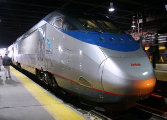

CLIFF1066/FLICKR
A high-speed rail train on the Acela Express train service, which operates between Washington, D.C., and Boston via Baltimore, Philadelphia and New York. Intercity passenger rail services consume one-third less energy per passenger-mile than cars.